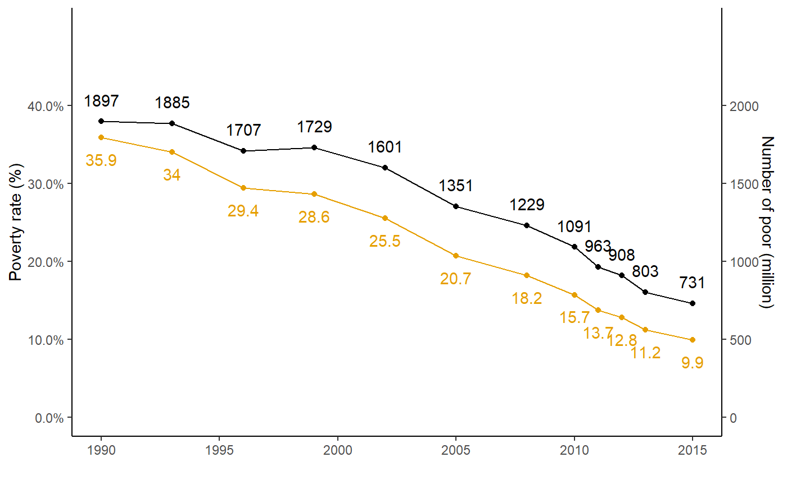
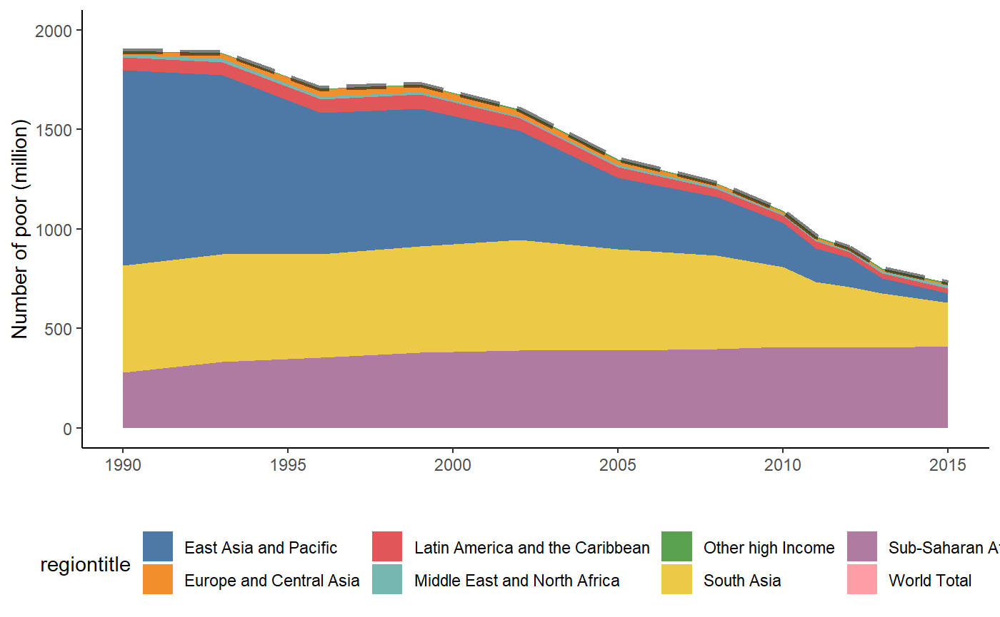
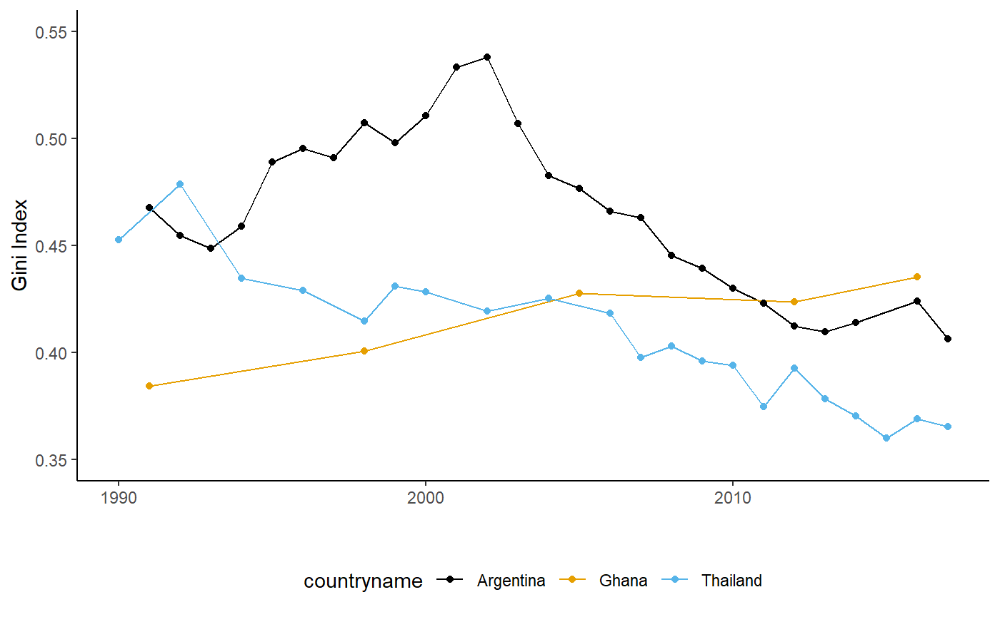

library(povcalnetR)
library(ggplot2)
library(tidyr)
library(ggthemes)
library(forcats)
library(scales)
library(dplyr)df <- povcalnet_wb() %>%
filter(year > 1989, regioncode == "WLD") %>%
mutate(
poor_pop = round(headcount * population, 0),
headcount = round(headcount, 3)
)
headcount_col <- "#E69F00"
ggplot(df, aes(x = year)) +
geom_text(aes(label = headcount * 100, y = headcount), vjust = 1, nudge_y = -0.02, color = headcount_col) +
geom_text(aes(label = poor_pop, y = poor_pop / 5000), vjust = 0, nudge_y = 0.02) +
geom_line(aes(y = headcount), color = headcount_col) +
geom_line(aes(y = poor_pop / 5000)) +
geom_point(aes(y = headcount), color = headcount_col) +
geom_point(aes(y = poor_pop / 5000)) +
scale_y_continuous(
labels = scales::percent,
limits = c(0, 0.5),
breaks = c(0, 0.1, 0.2, 0.3, 0.4),
sec.axis = sec_axis(~.*5000, name = "Number of poor (million)",
breaks = c(0, 500, 1000, 1500, 2000))) +
labs(
y = "Poverty rate (%)",
x = ""
) +
theme_classic()
df <- povcalnet_wb() %>%
filter(year > 1989) %>%
mutate(
poor_pop = round(headcount * population, 0),
headcount = round(headcount, 3)
)
regions <- df %>%
filter(regioncode != "WLD") %>%
mutate(
regiontitle = fct_relevel(regiontitle,
c("Other high Income",
"Europe and Central Asia",
"Middle East and North Africa",
"Latin America and the Caribbean",
"East Asia and Pacific",
"South Asia",
"Sub-Saharan Africa"
))
)
world <- df %>%
filter(regioncode == "WLD")
ggplot(regions, aes(y = poor_pop, x = year, fill = regiontitle)) +
geom_area() +
scale_y_continuous(
limits = c(0, 2000),
breaks = c(0, 500, 1000, 1500, 2000)
) +
scale_fill_tableau(palette = "Tableau 10") +
labs(
y = "Number of poor (million)",
x = ""
) +
theme_classic() +
theme(
legend.position = "bottom"
) +
geom_line(data = world, size = rel(1.5), alpha =.5, linetype = "longdash")
df <- povcalnet(country = c("ARG", "GHA", "THA"),
coverage = "all") %>%
filter(year > 1989) %>%
select(countrycode:isinterpolated, gini)
ggplot(df, aes(x = year, y = gini, color = countryname)) +
geom_line() +
geom_point(data = df[df$isinterpolated == 0, ]) +
scale_y_continuous(
limits = c(0.35, 0.55),
breaks = c(0.35, 0.40, 0.45, 0.50, 0.55)
) +
scale_color_colorblind() +
labs(
y = "Gini Index",
x = ""
) +
theme_classic() +
theme(
legend.position = "bottom"
)